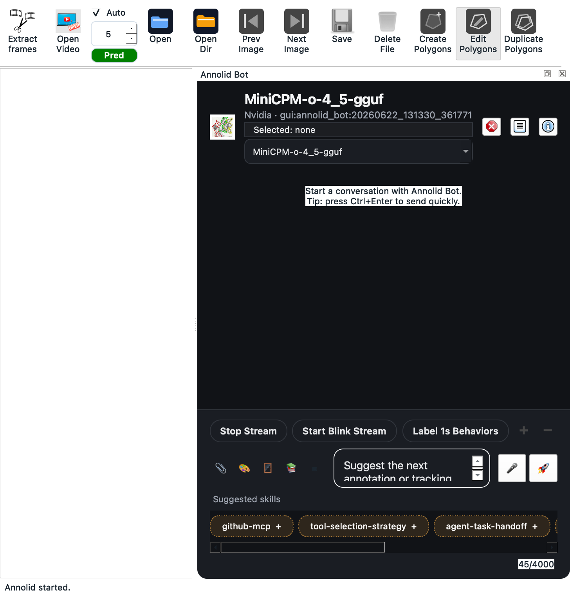
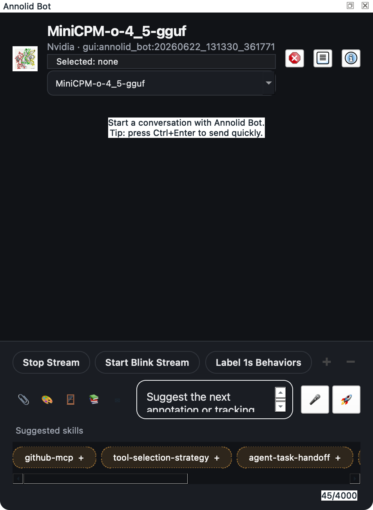
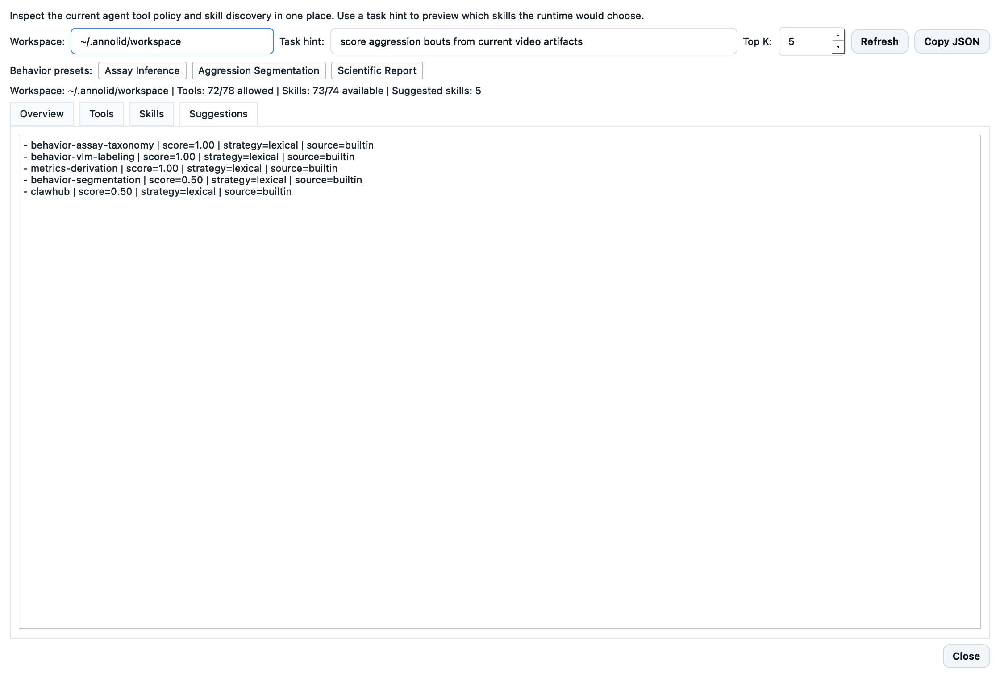

Annolid Bot & Guided Track Review#
Instead of remembering menu locations or complex CLI flags, you can work with Annolid Bot right inside the Annolid desktop window to launch tracking, score 1-second behavior clips, audit track quality, generate HTML5 reports, and kick off Sim-to-Real pipelines in plain language.


Fig. 63 The Annolid Bot dock (AI & Models → Annolid Bot…) sits beside your video canvas with quick action buttons, skill suggestions, and typed tool execution.#
Opening & Setting Up Annolid Bot#
In the desktop app, click
AI & Models → Annolid Bot….Choose your LLM/VLM provider (local Ollama models for 100% private lab data, or hosted OpenAI / Anthropic / Gemini APIs configured in Settings).
Send messages with
Ctrl+Enter(Cmd+Enteron macOS).


Fig. 64 Quick-launch buttons inside the Annolid Bot dock let you trigger 1-second behavior labeling or inspect the active workspace directly.#
Everyday Slash Commands (Copy & Paste)#
Type / in the Annolid Bot chat box to run structured, repeatable workflows immediately:
Slash Command |
What It Does |
Example |
|---|---|---|
|
Opens a guided form or runs Cutie / SAM3 tracking on your video |
|
|
Runs automated Track QC & gap audits on tracking CSVs or frame folders |
|
|
Computes kinematics, speed, freezing bouts, and telemetry summaries |
|
|
Generates a unified HTML5 + inline SVG + Markdown + JSON scientific report |
|
|
Opens Sim-to-Real Studio for zero-label 3D synthetic bootstrapping |
|
Natural-Language Prompts That Work Great#
You can also ask Annolid Bot in plain English:
Behavior segment scoring:
Label behavior in /path/to/video.mp4 with labels investigation, mount, grooming every 1s
SAM3 long-video tracking & NDJSON occlusion repair:
Inspect /path/to/video.mp4, run a dry run of sam3_agent_video_track with prompt "mouse", then track forward.
Sim-to-Real background job:
Sample my mouse videos in ./recordings, generate a matching 3D mouse pose dataset (calms7), and train a YOLO pose model on Colab in the background.
3D digital twin preview:
open threejs example two mice
The Guided Track-Review Loop (Shapes → QC → Behaviors)#
When you track thousands of frames, reviewing every single frame manually is impossible. Annolid’s guided review workflow narrows your attention to the exact 0.5% of frames that matter:

Fig. 65 Combine automatic propagation with Track QC alerts so you fix only genuine occlusion or swap frames.#
Run Track QC via
/qcin Annolid Bot orAnalysis → Analysis & Reporting Studio… → Track QC & Gaps.Sort by severity: Annolid ranks velocity spikes, missing-instance dropouts, area jumps, and ID-swap suspects into a prioritized manual review queue.
Jump & repair: Double-click any alert row to jump the main video canvas directly to that exact frame. Fix the polygon or keypoint, press
Ctrl+S, and re-propagate cleanly (with Cutie or SAM3 Agent).Verify & score behaviors: Once tracks pass QC, score ethogram bouts using Flags, Timeline, or Annolid Bot 1-second segment labeling, then run
/reportfor your unified HTML5/SVG summary.
Built-In Safety & Tool Inspection#
Annolid Bot routes CLI operations through a typed annolid_run tool with explicit path sandboxing and mutation guardrails:
Read-only discovery commands (
annolid-run list-models,annolid-run agent-status,annolid-run help train) run safely out of the box.State-changing operations (such as launching training, modifying files, or running updates) require explicit opt-in and respect workspace
allowed_read_roots.Open the Capabilities & Skills Inspector inside Annolid Bot to see every allowed tool and automatically matched research skill:


Fig. 66 Inspect active tool policies, workspace scope, and context-matched research skills in one click.#
Tip
Want to connect external MCP servers, Google Drive / Calendar, LanceDB memory, or customize security policies? See the full Agent & Automation Portal and Agent Security Guide.